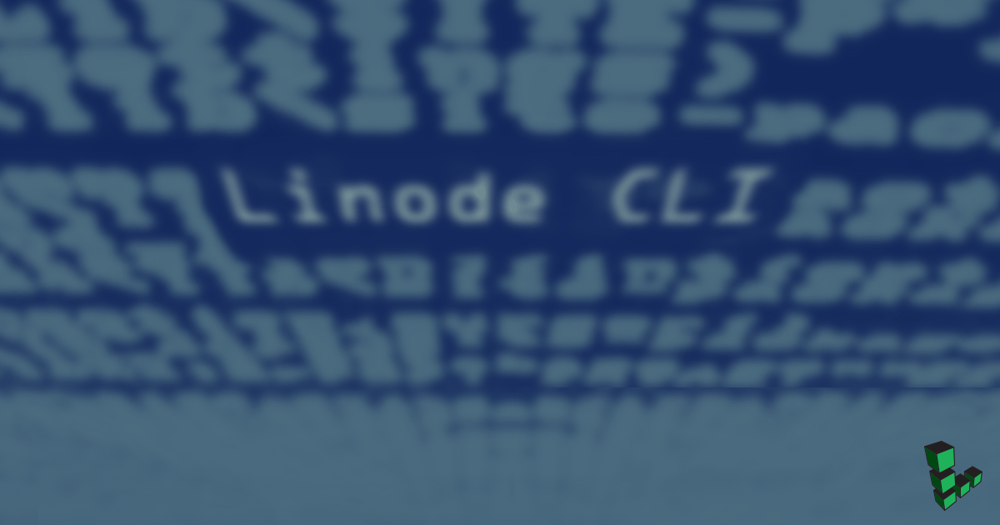

Using the Linode CLI
Updated by Linode Written by Jared Kobos

The Linode CLI is a wrapper around the Linode API that allows you to manage your Linode account from the command line. Virtually any task that can be done through the Linode Manager can be done through the CLI, making it an excellent tool for scripting.
This guide describes the basics of installing and working with the CLI. It also offers examples illustrating how to complete common tasks using the CLI.
Install the CLI
The easiest way to install the CLI is through Pip:
Install the CLI:
pip install linode-cli --upgradeYou need a Personal Access Token to use the CLI. Use the Linode Cloud Manager to obtain a token.
The first time you run any command, you will be prompted with the CLI’s configuration script. Paste your access token (which will then be used by default for all requests made through the CLI) at the prompt. You will be prompted to choose defaults for Linodes created through the CLI (region, type, and image). These are optional, and can be overridden for individual commands. Update these defaults at any time by running
linode-cli configure:Welcome to the Linode CLI. This will walk you through some initial setup. First, we need a Personal Access Token. To get one, please visit https://cloud.linode.com/profile/tokens and click "Create a Personal Access Token". The CLI needs access to everything on your account to work correctly. Personal Access Token:
NoteThe CLI installs a bash completion file. On OSX, you may have to source this file before it can be used. To do this, addsource /etc/bash_completion.d/linode-cli.shto your~/.bashrcfile.
Options
Help
View information about any part of the CLI, including available actions and required parameters, with the --help flag:
linode-cli --help
linode-cli linodes --help
linode-cli linodes create --help
Customize Output Fields
By default, the CLI displays a set of pre-selected fields for each type of response. If you would like to see all available fields, use the --all flag:
linode-cli linodes list --all
Specify exactly which fields you would like to receive with the -format option:
linode-cli linodes list --format 'id,region,memory'
JSON Output
The CLI will return output in tabulated format for easy readability. If you prefer to work with JSON, use the --json flag. Adding the --pretty flag will format the JSON output to make it more readable:
linode-cli regions list --json --pretty
[
{
"country": "us",
"id": "us-central"
},
{
"country": "us",
"id": "us-west"
},
{
"country": "us",
"id": "us-southeast"
},
{
"country": "us",
"id": "us-east"
},
...
]Machine Readable Output
You can also display the output as plain text. By default, tabs are used as a delimiter, but you can specify another character with the --delimiter option:
linode-cli regions list --text
id country
us-central us
us-west us
us-southeast us
us-east us
eu-west uk
ap-south sg
eu-central de
ap-northeast jp
ap-northeast-1a jp
ca-east calinode-cli regions list --text --delimiter ";"
id;country
us-central;us
us-west;us
us-southeast;us
us-east;us
eu-west;uk
ap-south;sg
eu-central;de
ap-northeast;jp
ap-northeast-1a;jp
ca-east;caExamples
This section reviews some common examples related to Linodes, Domains, Block Storage Volumes, NodeBalancers, and account details.
Linodes
Tasks related to Linode instances are performed with linode-cli linodes [ACTION].
List all of the Linodes on your account:
linode-cli linodes listFilter results to a particular region:
linode-cli linodes list --region us-eastFiltering works on many fields throughout the CLI. Use
--helpfor each action to see which properties are filterable.Create a new Linode:
linode-cli linodes create --root_pass mypasswordThe defaults you specified when configuring the CLI will be used for the new Linode’s type, region, and image. Override these options by specifying the values:
linode-cli linodes create --root_pass mypassword --region us-east --image linode/debian9 --group webserversIf you are not writing a script, it is more secure to use
--root_passwithout specifying a password. You will then be prompted to enter a password:linode-cli linodes create --root_passFor commands targeting a specific Linode, you will need that Linode’s ID. The ID is returned when creating the Linode, and can be viewed by listing the Linodes on your account as described above. Store the ID of the new Linode (or an existing Linode) for later use:
export linode_id=<id-string>View details about a particular Linode:
linode-cli linodes view $linode_idBoot, shut down, or reboot a Linode:
linode-cli linodes boot $linode_id linode-cli linodes reboot $linode_id linode-cli linodes shutdown $linode_idView a list of available IP addresses for a specific Linode:
linode-cli linodes ips-list $linode_idAdd a private IP address to a Linode:
linode-cli linodes ip-add $linode_id --type ipv4 --public falseList all disks provisioned for a Linode:
linode-cli linodes disks-list $linode_idUpgrade your Linode. If an upgrade is available for the specified Linode, it will be placed in the Migration Queue. It will then be automatically shut down, migrated, and returned to its last state:
linode-cli linodes upgrade $linode_idRebuild a Linode:
linode-cli linodes rebuild $linode_id --image linode/debian9 --root_pass
Many other actions are available. Use linode-cli linodes --help for a complete list.
Domains
List the Domains on your account:
linode-cli domains listView all domain records in a specific Domain:
linode-cli domains records-list $domain_idDelete a Domain:
linode-cli domains delete $domain_idCreate a Domain:
linode-cli domains create --type master --domain www.example.com --soa_email email@example.comCreate a new A record in a Domain:
linode-cli domains records-create $domain_id --type A --name subdomain --target 192.0.2.0
NodeBalancers
Create a new NodeBalancer:
linode-cli nodebalancers create --region us-east --label new-balancerCreate a configuration for a NodeBalancer:
linode-cli nodebalancers config-create $nodebalancer_idAttach a Node to a NodeBalancer:
linode-cli nodebalancers node-create --address 192.200.12.34:80 --label node-1To delete a node, you will need the ID of the NodeBalancer, configuration, and node:
linode-cli nodebalancers node-delete $nodebalancer_id $config_id $node_id
Block Storage Volumes
List your current Volumes:
linode-cli volumes listCreate a new Volume, with the size specified in GiB:
linode-cli volumes create --label my-volume --size 100 --region us-eastSpecify a
linode_idto create the Volume and automatically attach it to a specific Linode:linode-cli volumes create --label my-volume --size 100 --linode_id $linode_idAttach or detach the Volume from a Linode:
linode-cli volumes attach $volume_id --linode_id $linode_id linode-cli volumes detach $volume_idResize a Volume (size can only be increased):
linode-cli volumes resize $volume_id --size 200Delete a Volume:
linode-cli volumes delete $volume_id
Account
View or update your account information, add payment methods, view notifications, make payments, create OAuth clients, and do other related tasks through the account action:
View your account:
linode-cli account viewView your account settings:
linode-cli account settingsMake a payment:
linode-cli account payment-create --cvv 123 --usd 20.00View notifications:
linode-cli account notifications-list
Support Tickets
List your Support Tickets:
linode-cli tickets listOpen a new Ticket:
linode-cli tickets create --description "Detailed description of the issue" --summary "Summary or quick title for the Ticket"If your issue concerns a particular Linode, Volume, Domain, or NodeBalancer, pass the ID with
--domain_id,--linode-id,--volume_id, etc.List replies for a Ticket:
linode-cli tickets replies $ticket_idReply to a Ticket:
linode-cli tickets reply $ticket_id --description "The content of your reply"
Events
View a list of events on your account:
linode-cli events listView details about a specific event:
linode-cli events view $event_idMark an event as read:
linode-cli events mark-read $event_id
More Information
You may wish to consult the following resources for additional information on this topic. While these are provided in the hope that they will be useful, please note that we cannot vouch for the accuracy or timeliness of externally hosted materials.
Join our Community
Find answers, ask questions, and help others.
This guide is published under a CC BY-ND 4.0 license.